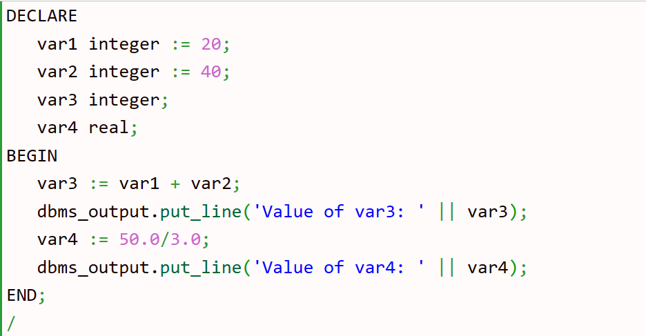
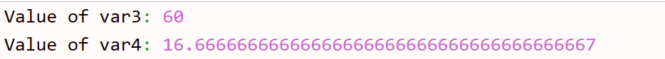

Variable:
Variable is the name of reserved memory location. Each variable has a specific data type which determines the range of values and set of operations for that variable.
PL/SQL variables naming rules:
A variable name can't contain more than 30 characters.
A variable name must start with an ASCII letter followed by any number, underscore (_) or dollar sign
($).
PL/SQL is case-insensitive i.e. var and VAR refer to the same variable.
How to declare variable in PL/SQL:
We have to declare a PL/SQL variable in the declaration section or in a package as a global variable. After declaration PL/SQL allocates memory for the variable and variable name is used to identify the storage location.
Syntax:variable_name [CONSTANT] datatype [NOT NULL] [:= | DEFAULT initial_value]
variable_name is a valid identifier name.
datatype is a valid PL/SQL datatype.
Initializing Variables in PL/SQL:
When we declare a variable PL/SQL assigns it NULL as default value. If we want to initialize a variable with a non-NULL value, we can do it during the declaration. We can use any one of the following methods:
1. The DEFAULT keyword Num1 binary_integer := 0;2. The assignment operator siteName varchar2(20) DEFAULT 'defvar';
Example:
Output
Variable Scope in PL/SQL:
As we discussed in earlier tutorial that PL/SQL allows the nesting of blocks i.e. blocks with blocks. Based on the nesting structure PL/SQL variables can be divide into following categories:
Local variables - Those variables which are declared in an inner block and not accessible to outer blocks are known as local variables.Global variables - Those variables which are declared in the outer block or a package and accessible to itself and inner blocks are known as global variables.